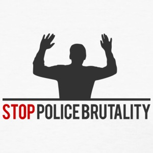
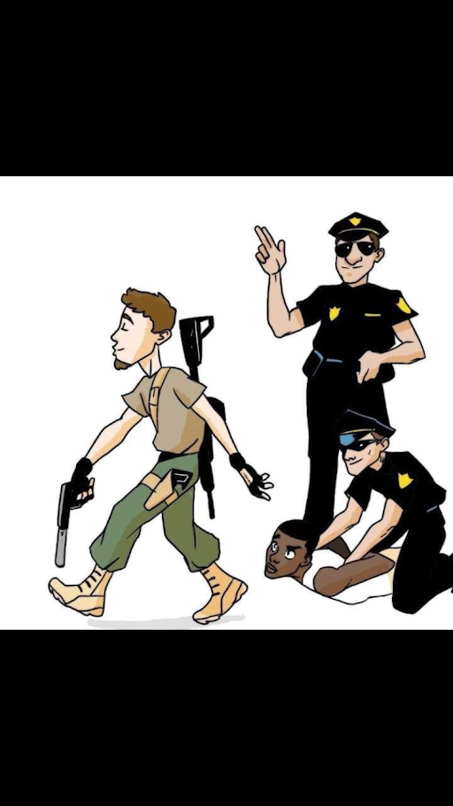
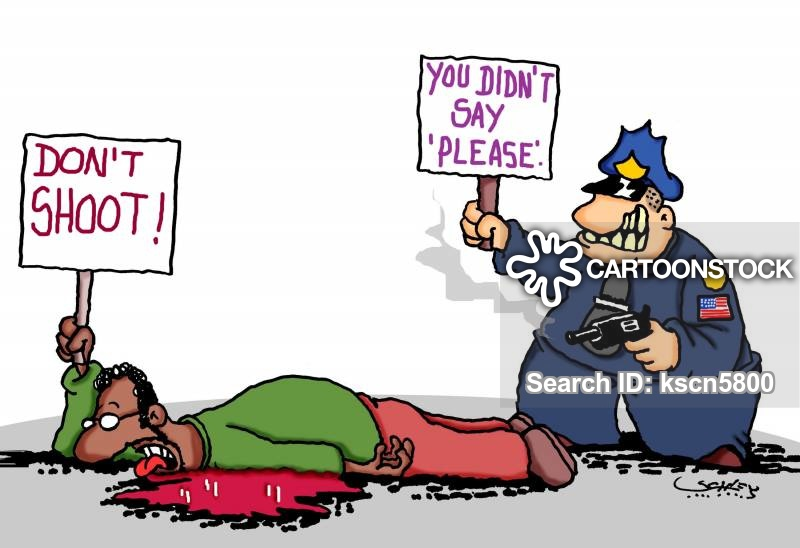

Police Brutality Against African Americans
What to do when you encounter the police?
Reporting Police Misconduct?
What is Police Brutality?
Information for Undocumented People
What can you do to protect yourself from ICE?
What You Didn't Know About Undocumented People
Myths, Facts, and Statistics
Stories
What Undocumented People Are Afraid Of
Take Action
Racism Facts, Statistics, & History
victims
Statistics
History
What is police brutality?
Police brutality is a form of police misconduct, where officers use excessive force. Excessive use of force is generally taken to mean force that was not necessary for that particular situation. Several nations around the world have laws that address police brutality. The complaints about excessive use of force by police are not investigated and if they are, they usually say the officer acted appropriately.

How does police brutality effect the victims?
Victims may suffer physical harm, psychological damage and even fatality in extreme cases. Many victims of police brutality may suffer from PTSD, which is Post-Traumatic Stress Disorder. Police brutality also have societal impacts, as citizens feel compelled to avoid police and they tend to lose faith that police officers are willing and able to provide them with protection.
When did a case of police brutality come about?

Two years ago a massive protests had erupted when Yanez killed Castile, after pulling him over for a broken taillight. Dashcam shows Yanez firing through open window, seconds after Castile disclosed that he owned and was licensed to carry a concealed weapon. After a jury acquitted a former police officer, Jeronimo Yanez of manslaughter in the shooting death of 32-year-old Philando Castile. Protesstors shut down Interstate 94 with signs that read: "Black Lives Matter" and "No Justice No Peace". The scene was familiar. Today, live streaming, tweets and Facebook posts have blasted the incidents of police brutality, beyond the black community and into the mainstream media. Philando's fiancee, Diamond Reynolds, who was in the car with her daughter when he was shot, streamed the immediate aftermath of the shooting on her phone using Facebook live. 